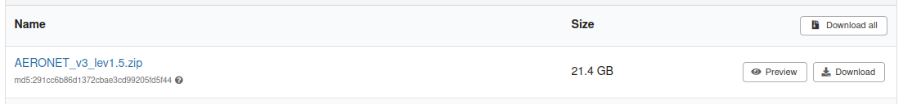
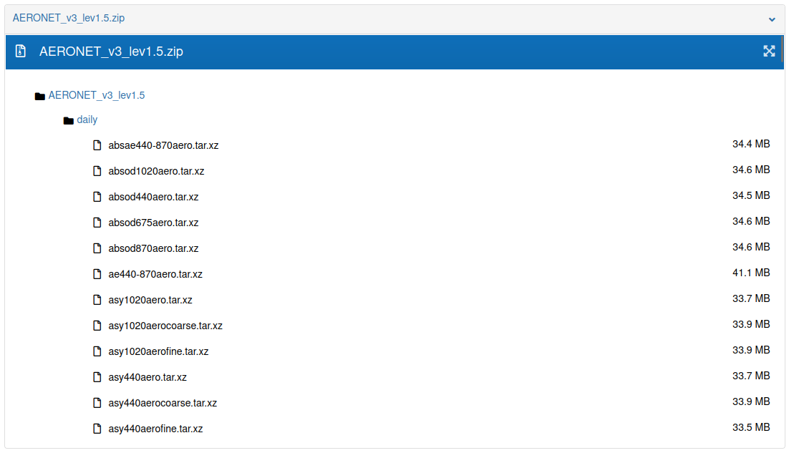

Zenodo
Providentia’s download mode supports downloading GHOST observational data from Zenodo.
No Zenodo account is required to download the files.
Available GHOST versions
Currently, two versions of GHOST uploaded on Zenodo are available for download:
How to enable Zenodo download
Make sure to set:
dl_ghost_source = zenodo
or
Answer n to the prompt:
“Do you want to download from the BSC remote machine? (Otherwise, GHOST data will be retrieved from Zenodo)”
Available networks
To download a network, choose one of the networks from the options per data version below.
Version 1.5
These are the available networks for version 1.5:
AERONET_v3_lev1.5AERONET_v3_lev2.0CANADA_NAPSCAPMoNCHILE_SINCAEBAS-ACTRISEBAS-AMAPEBAS-CAMPEBAS-COLOSSALEBAS-EMEPEBAS-EUCAARIEBAS-EUSAAREBAS-HELCOMEBAS-HTAPEBAS-IMPACTSEBAS-IndependentEBAS-NILUEBAS-NOAA_ESRLEBAS-NOAA_GGGRNEBAS-OECDEBAS-UK_DECCEBAS-WMO_WDCAEBAS-WMO_WDCRGEEA_AIRBASEEEA_AQ_eReportingGHOST-PUBLICMEXICO_CDMXMITECOUK_AIRUS_EPA_AQSUS_EPA_AirNow_DOSUS_EPA_CASTNETUS_NADP_AMNetUS_NADP_AMoNWMO_WDCGG
Dataset temporal coverage
The dataset covers the period from January 1971 to December 2022.
Version 1.5.1
These are the available networks for version 1.5.1:
AERONET_v3_lev1.5AERONET_v3_lev2.0CANADA_NAPSCAPMoNEANETEBAS-ACTRISEBAS-AMAPEBAS-CAMPEBAS-EMEPEBAS-EUCAARIEBAS-EUSAAREBAS-GUANEBAS-HELCOMEBAS-IMPACTSEBAS-IMPROVEEBAS-IndependentEBAS-NILUEBAS-NOAA_ESRLEBAS-OECDEBAS-RI_URBANSEBAS-WMO_WDCAEEAGHOSTINDAAFUK_AIRUS_EPA_AQSUS_EPA_CASTNETUS_NADP_AIRMoNUS_NADP_MDNUS_NADP_NTNWMO_WDCPC
Dataset temporal coverage
The dataset covers the period from January 1971 to December 2024.
Explore network contents
To view the available data for each network, visit the Zenodo page for one of the versions. You can find the links in this section.
When scrolling down, you will find the list of available networks, where the name and the total size for each network are shown.

Larger networks contain more NetCDF files and therefore take longer to download. Some ZIP files may take several hours to complete, depending on their size.
In order to see the ZIP file contents on the network you’re interested in, open the Files dropdown and click Preview.
Once this is done, open the dropdown named after the network. The first-level directories correspond to the resolution, and the second-level directories correspond to the species.

Example configuration file
For the example shown above, the corresponding configuration file is as follows:
[zenodo-AERONET_v3_lev1.5]
ghost_version = 1.5
start_date = 20210101
end_date = 20220101
species = absae440-870aero
network = AERONET_v3_lev1.5
resolution = daily
dl_ghost_source = zenodo
Also, another example using a lighter network with faster download times:
[zenodo-EBAS-NILU]
ghost_version = 1.5
network = EBAS-NILU
start_date = 202001
end_date = 202101
species = sconcno3, sconco3, sconcna
resolution = daily
dl_ghost_source = zenodo